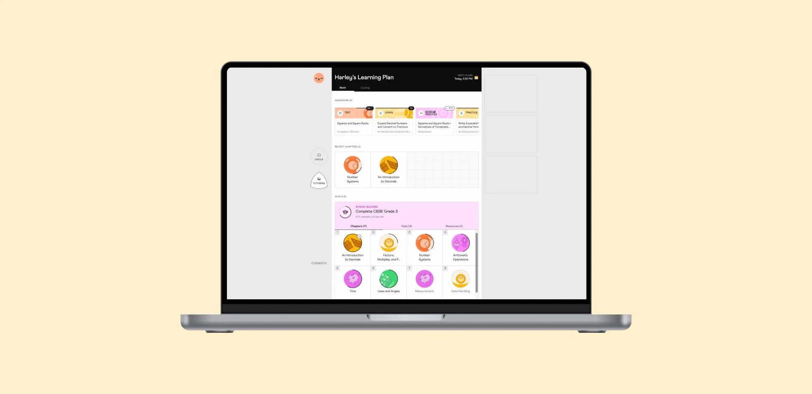
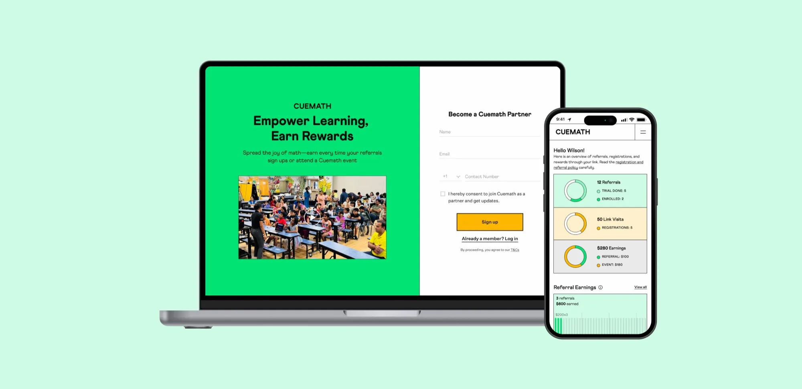
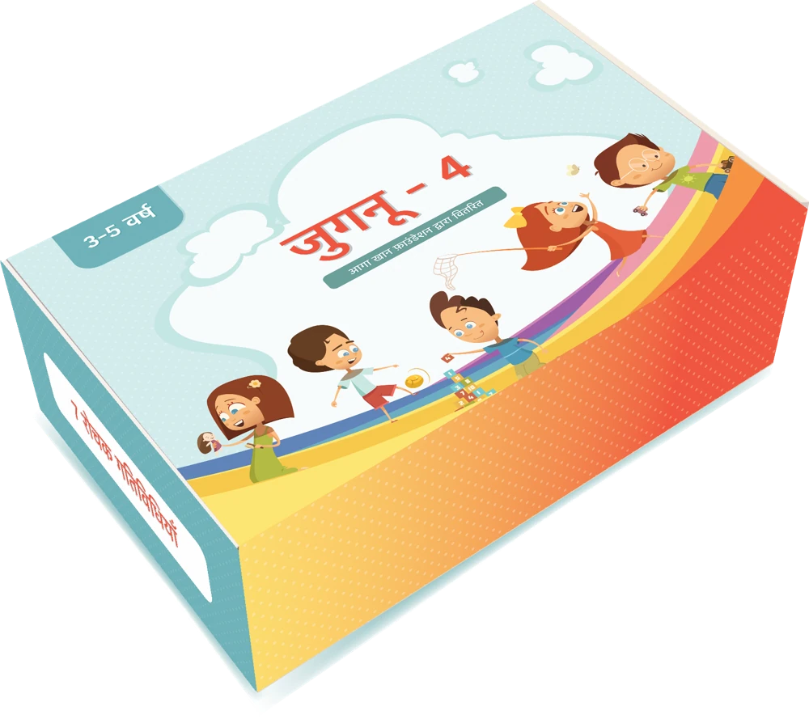
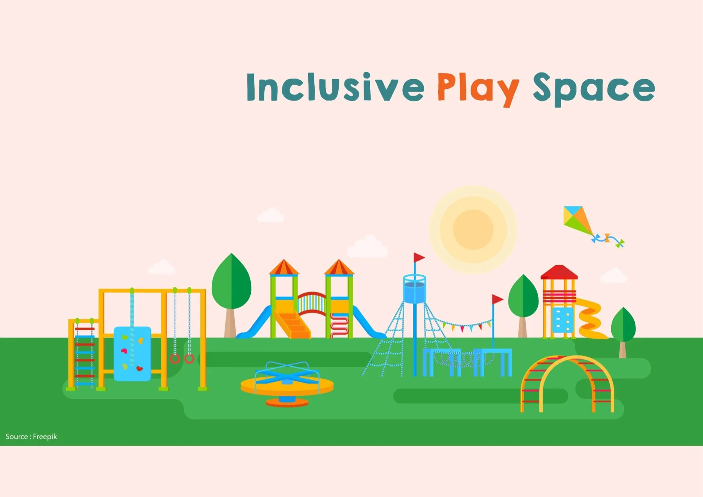
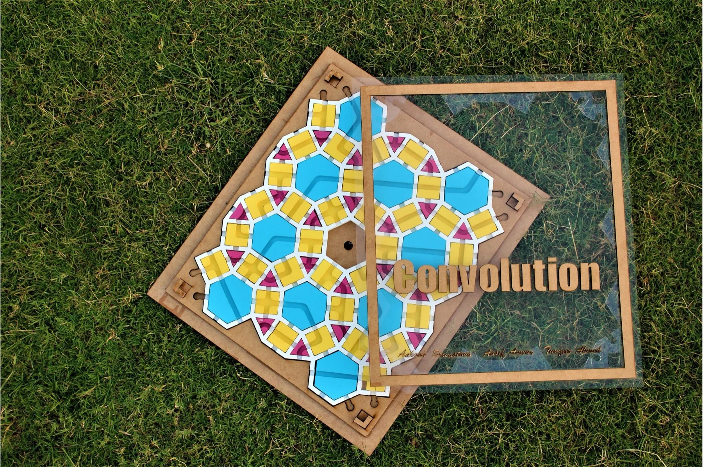
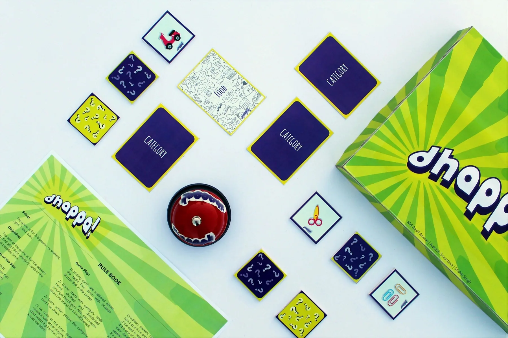

Open to product design roles
I designed learning tools
for 30K students
and 3K+ tutors.
Lifted trial-to-paid by 9.6%. Got 75.2% of students into class ready to learn.
Start with Feel Check ↓

Open to product design roles
Lifted trial-to-paid by 9.6%. Got 75.2% of students into class ready to learn.
I've worked with


Student-led emotional check-in for live classes. 75.2% of students ready to learn after Feel Check (n=459 tutor observations).

Trial funnel redesign distributing work across system, teachers, parents. −70% Academic Counselor intervention, +50% qualified leads to trial, +9.6% trial-to-paid.

Designed a goal creation flow, homework queue, and surfaced recent chapters. Benefiting 30K active students and 3K+ tutors.

Partner platform for community influencers tracking event referrals and payouts. 138 onboarded, 3,019 active users.







Created with ❤️ by Srishti Singh
I did my Master's in Toy and Game Design from NID — a discipline most people misread as "design for kids." It's not. It's the design of playful experiences: engagements with games, physical environments, or interactive systems. The medium changes; the principle doesn't.
I joined Cuemath as a Game Designer. When my manager asked me to take on product, I said yes. The users were still kids; the work, still about engagement — just inside a bigger system now. Five years in, the thing I keep coming back to is simpler than I thought: listen to the person who's stuck, understand the friction, build the thing.
I'm resourceful (jugadu is what my friends at NID call me), because I believe in using what you have: connections, creativity, hustle, to solve real problems. Every turn in my career came through a connection I built or people I valued — I try not to forget that. I stay engaged through implementation because design isn't done at handoff. I ask questions because I'm genuinely curious; listening deeply is how you find the real problem.
Let's build something meaningful at scale.
I'm looking for product design roles on consumer-facing products at scale, where design has real influence. I want to keep listening deeply, solving thoughtfully, and helping teams ship things that actually matter.